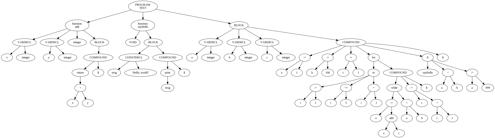
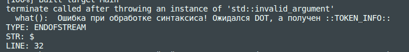
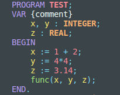
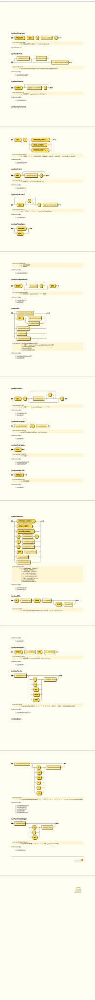
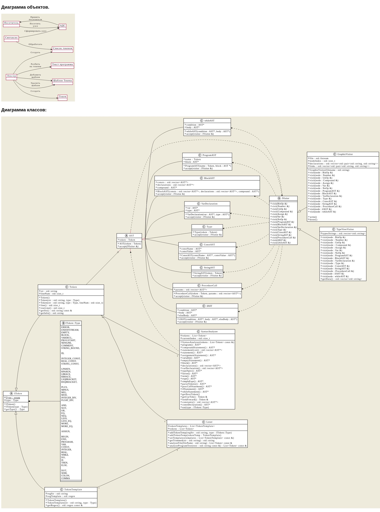

Синт. анализатор, который формирует абстрактное дерево синтаксиса по коду на языке Pascal (пока что?)
Состоит из:
- Лексера - разбивате на токены полученную программу
- Синтаксического анализатора - из токенов формирует дерево программы
- Различные посетители (наследники IVisitor) - обходят дерево, выполняя какую-то задачу (Например, GraphizVisitor формирует изображения деревьев, как ниже)

Текст программы, по которому построено дерево:
PROGRAM test;
CONST eps = 0.0001;
VAR a, b, fa, fb, x, fx : REAL;
BEGIN
write('Inter numbers a and b (a<b): ');
readln(a,b);
assert(a<b);
fa := sin(a);
fb := sin(b);
assert(fb*fa<0);
{ comment, hello
}
WHILE (b-a) > eps DO
BEGIN
x := (b+a)/2;
fx := sin(x);
IF fa*fx <= 0 THEN
b := x
ELSE
BEGIN
a := x;
fa := fx;
END;
END;
writeln('Root of function on [a,b] is equal ',(b+a)/2);
END.
Если убрать точку в конце программы, то анализатор сообщит об этом: 
Так же, добавляя новых посетителей можно расширять функционал. Например, добавить подсветку: 
И так далее.
Структура
- side_include - различные сторонние библиотеки
- include - мои заголовочные файлы
- src - сурсы для классов и т. п.
- schemes - объектная схема и диаграмма классов (не всегда актуальные на данный момент)
- progs - тексты программ для ручного запуска и проверки
- tests - тесты, имеющие свои тексты для проверок
- examples - для Doxygen, попытка добавить примеры кода для документации
К большей части кода есть doxy комменты, поэтому подкорректировав Doxyfile можно собрать документацию к проекту. (А так же в VSCode и других редакторах за счет этого более хорошие подсказки по параметрам и т. п.)
Что используется из стороннего?
Синтаксические диаграммы:

Диаграмма объектов и диаграмма классов:
